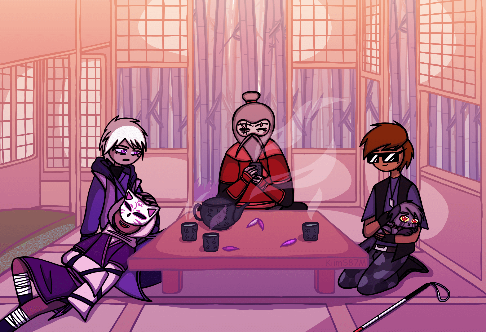
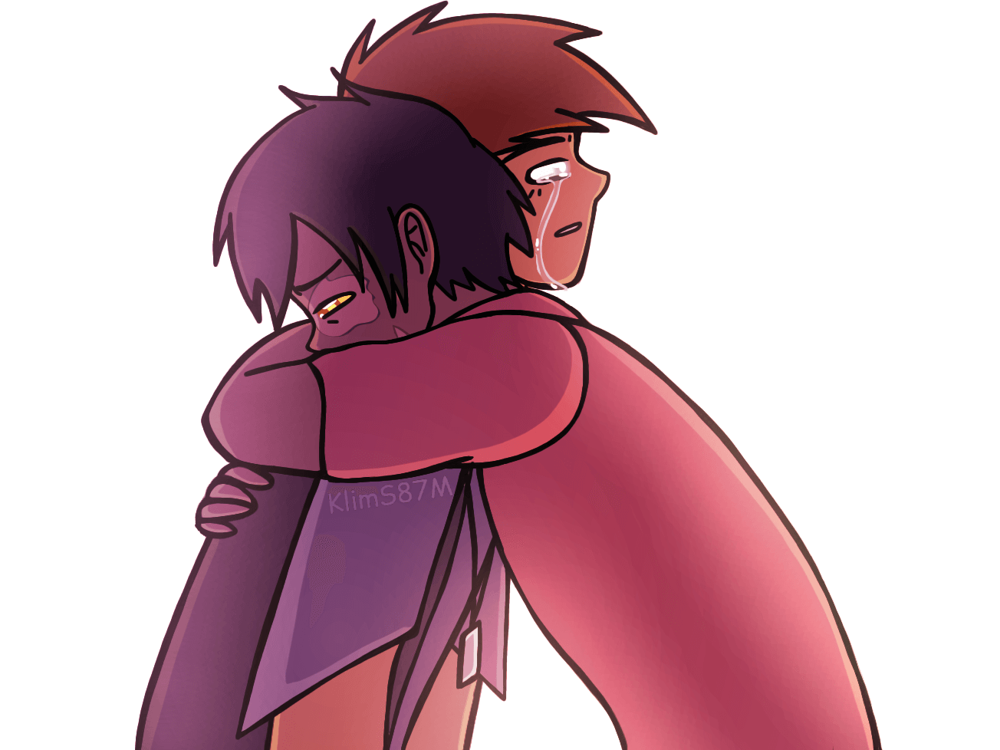
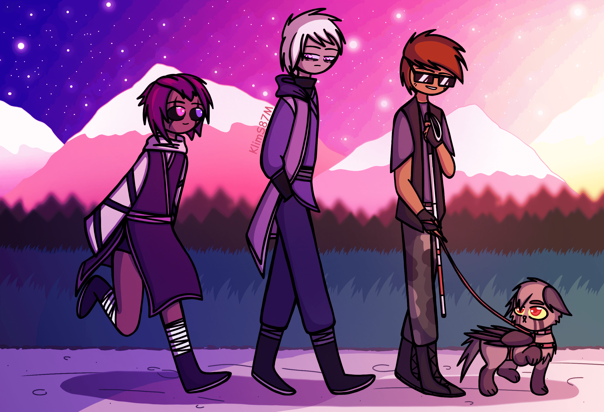
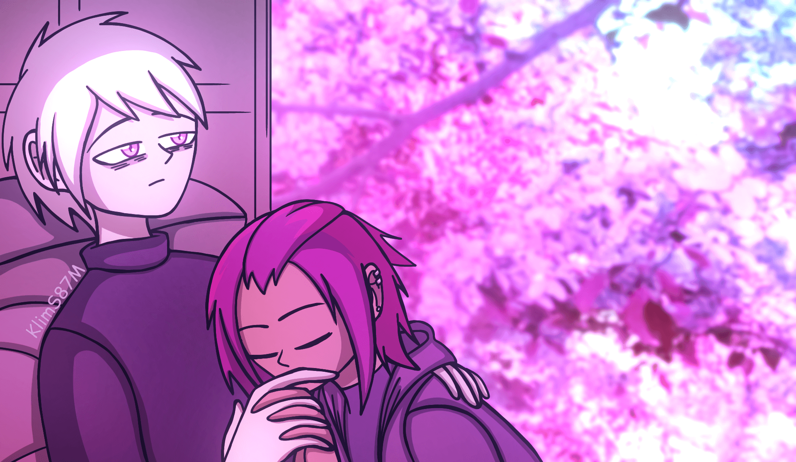
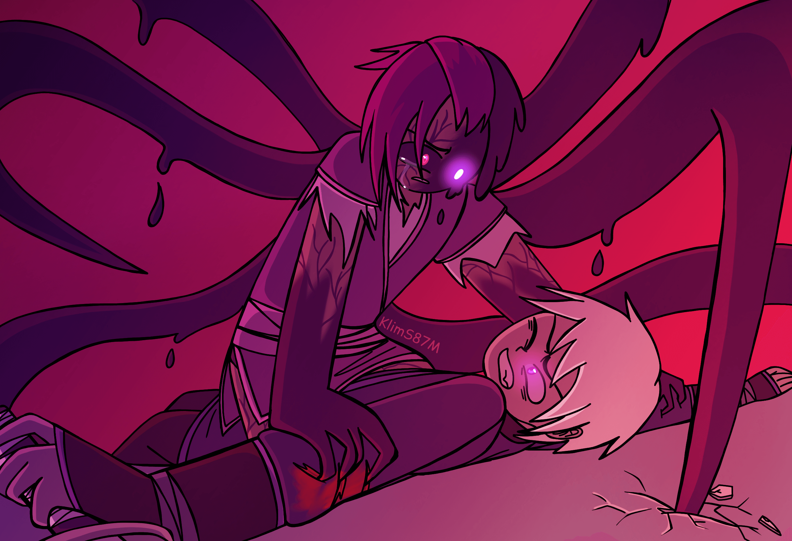

«Сгорая сам, свети другим»
Сгорая сам, свети другим. Это принцип, которого придерживались все близкие Феликса. Но не он сам.
Феликс не думал, что все обернется вот так. Ему начинало казаться, что с самого начала фортуна была не на его стороне. С самого детства так было. Он рано осиротел, война забрала у него родителей. Он так бы и не познал материнской любви, если бы не мама Чарли. Но и здесь альбиносу не повезло. Мария - женщина, которая вырастила его, каждый день дарила своей заботой, своим пониманием юноше надежду на светлое будущее, скончалась. Тяжелая болезнь и отсутствие должной медицинской помощи в том городке, в котором они жили, забрали и ее. У него остался только названный брат. Чарли - добрый, отзывчивый, остроумный парень, который постоянно ищет проблемы на пятую точку. К сожалению, у него это получается отменно. Феликс старался его уберечь. Старался. И что же случилось? Чарли ослеп. Навсегда. Он и его не сумел спасти.
Но осуждал ли его за это Чарли? Нет. Он продолжал дело их матери. Он не давал ему сдаться. С ослепшими глазами, которые навсегда потеряли свой оттенок бескрайнего голубого неба, Чарли внушал Феликсу веру в себя. Хотя должно было быть в точности наоборот. Это он должен был поддерживать его, это он должен был говорить ему воодушевляющие речи, что война вскоре закончится и они заживут мирной жизнью. Но эту роль на себя взял его брат. И все это время Феликс даже не представлял, какую боль он испытывал, продолжая улыбаться и пряча свои эмоции за стеклами темных очков. Феликс слышал, как он кричит порой по ночам от кошмаров. После сна Чарли не верилось, что он не может видеть. Ему нужно было время, чтобы вспомнить об этом. А затем как ни в чем не бывало он проходил в гостиную в хижине старика Танаки, садился с ними за стол, поглаживая Руру на руках, и с той же беззаботной улыбкой вливался в разговор. Чарли вставал и шел с ним в битву с демонами, которые преграждали им путь. Он дрался с ним плечом к плечу, тренировался, пытаясь привыкнуть к своей слепоте, помочь всеми силами, несмотря на свою инвалидность. Чарли был сильным, Феликс нет.
Феликс давно заметил, что он - не проницательный человек. Он не знал, как понять, что кто-то действительно нуждается в твоей поддержке. В моральной. Здесь речь не шла о защите. Речь шла об эмпатии. Он этого не знал, а друг Чарли - да. Тимур, лишь переговорив с Чарли пятнадцать минут, позволил ему выплеснуть эмоции наружу. Это был второй раз, когда Феликс увидел, как его брат плачет. Первый раз был тогда, когда он мучился от невыносимой боли во время того, как ослеп. Второй был этот. Когда Тимур обнял Чарли, и тот дал волю слезам. Чарли предпочел открыться лучшему другу, но не своему брату. Все это время Чарли сдерживался, чтобы не подвести Феликса, чтобы не сломить его дух. Когда же он наконец-то был в “безопасности”, рядом с товарищем, которому больше всего доверял, он позволил себе выговориться. Феликс почувствовал себя ничтожным в этот момент. Он ничего не мог сделать. Он и не стал сопротивляться, когда Тимур заявил, что заберет Чарли на Родину. Это будет правильно. С Тимуром Чарли будет лучше. С ним ему не придется носить маску вечно жизнерадостного парня, c ним он мог быть самим собой .
Феликс не понимал истинных намерений людей. Акира казалась ему девушкой хрупкой, беспомощной. Он не раз ей об этом говорил, при этом пытаясь доказать ей, что он в любом случае всегда готов защитить ее вместе с Чарли. Она не была хрупкой. Она была даже опасной. Он ведь не знал, какая разрушительная сила таится внутри этой девушки. Она прошла с ним и с Чарли весь путь. Она вместе с ними жила в хижине Танаки, пила с ними чай, бегала за парнями хвостом, вечно рвалась помочь. Еще она просила их не мстить клану Мурасаки. Под конец она практически умоляла братьев остановиться. Даже Чарли тогда задумался, стоит ли им и дальше рисковать своими жизнями? Может, действительно нужно оставить это дело другим солдатам? Ведь сами изнуренные, искалеченные... что они могли? Но нет, Феликс был ослеплен местью. Он хотел отомстить настолько сильно, что не замечал, как из-за этого страдали его близкие.
Феликс осознал, что он должен был прежде всего заботиться о безопасности Чарли, Акиры, Руру, Танаки и своих товарищей, только сейчас. Именно сейчас, когда тело Акиры перевоплощается в демоническое и слезы отчаяния стекают по ее щекам. Совсем недавно ведь эта девушка спала на его коленях, и он любовался ей, совсем недавно эта девушка весело смеялась вместе с Чарли во время игры с его питомцем. Они бы могли найти тот самый тихий уголок, если бы Феликс забыл о мести и вспомнил о людях, которых всем сердцем любит. Но теперь ему придется бороться. С Акирой. По-настоящему. Он обязан вернуть ту спокойную жизнь, о которой они так давно мечтали. Акира, Чарли, Руру и Танаки должны быть в этом спокойном будущем. Он обязан бороться. И он теперь не отступит. Никогда.
  